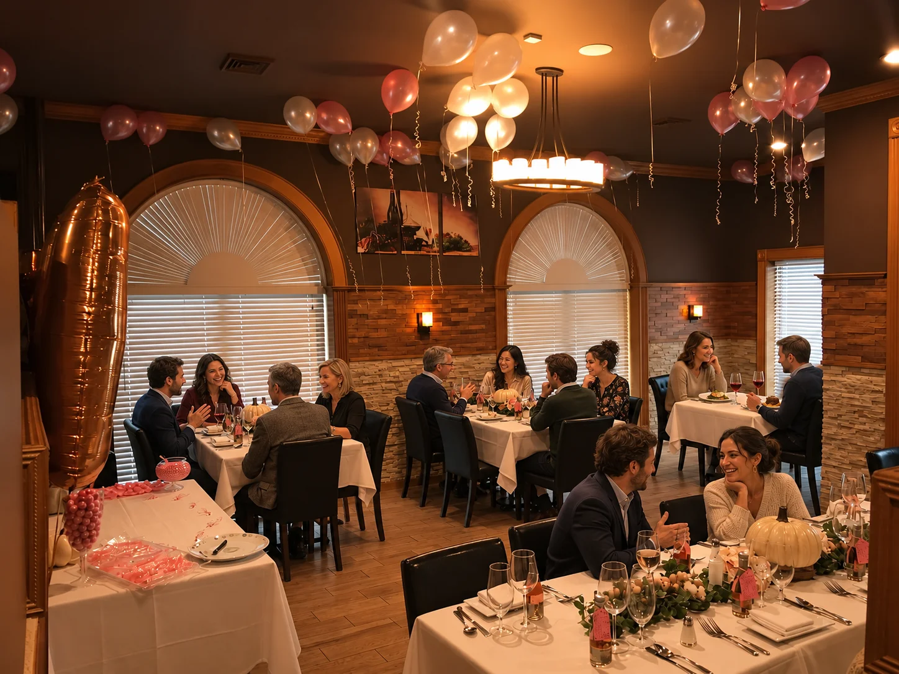
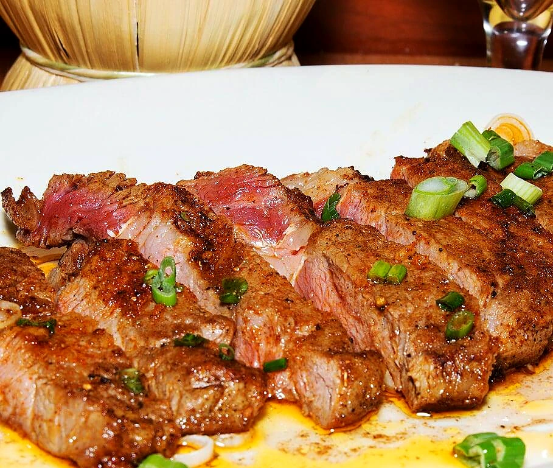
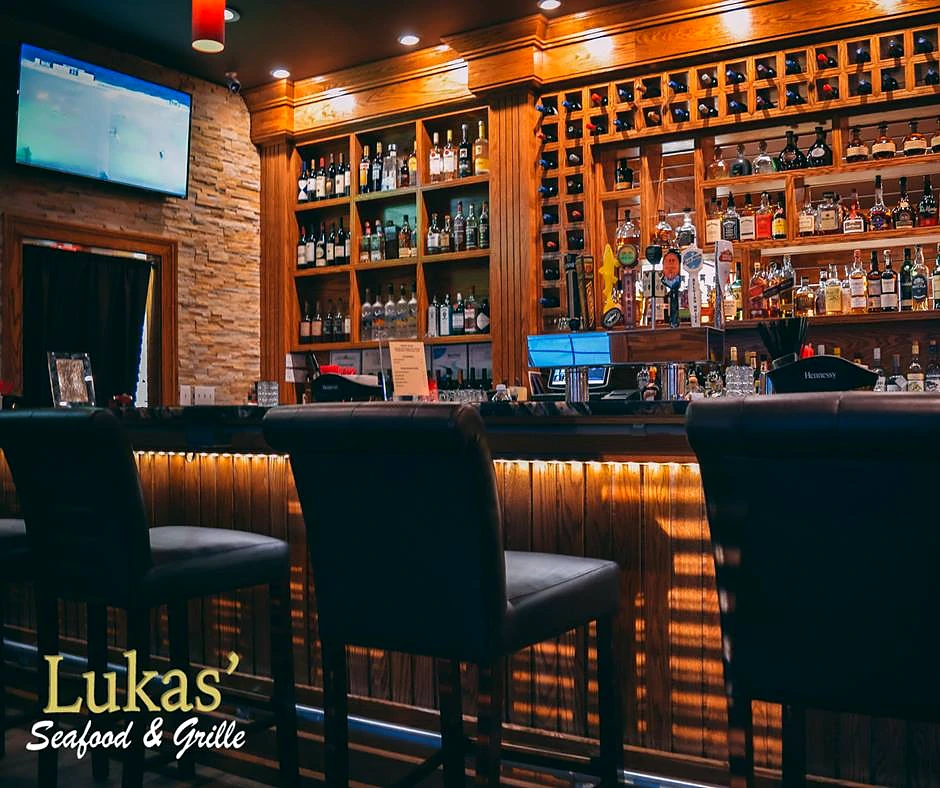
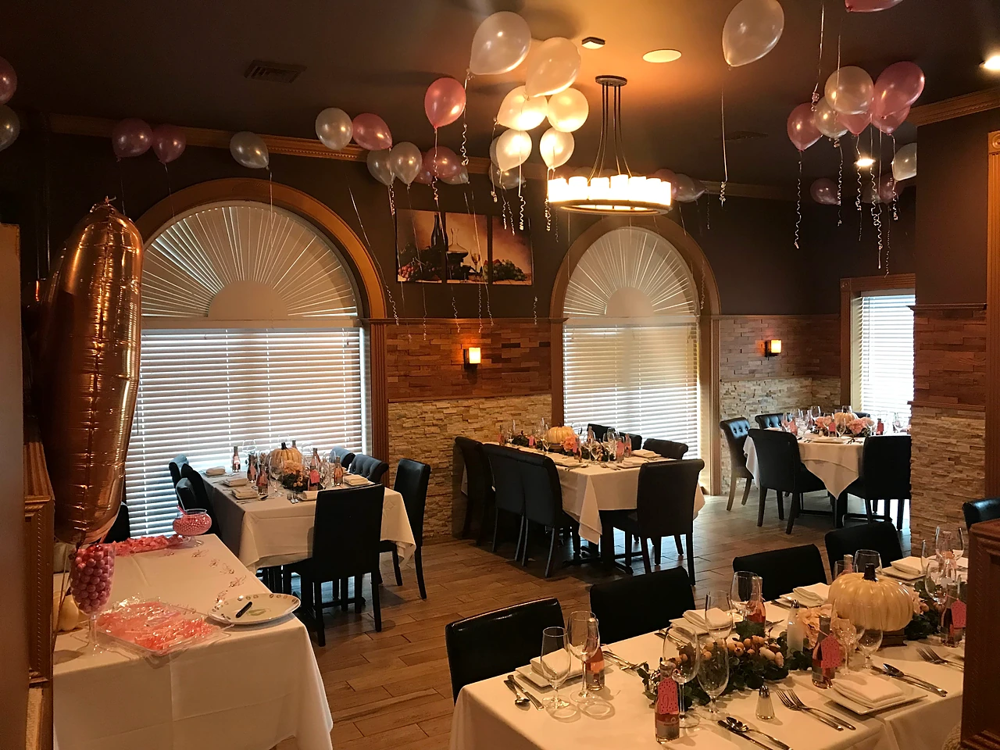
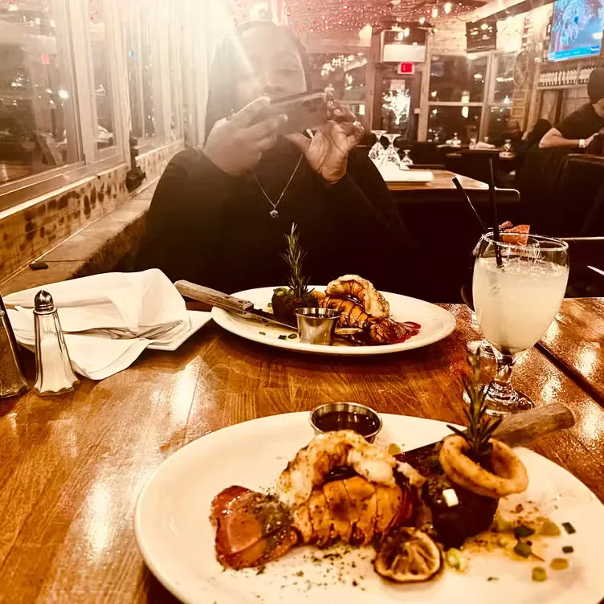
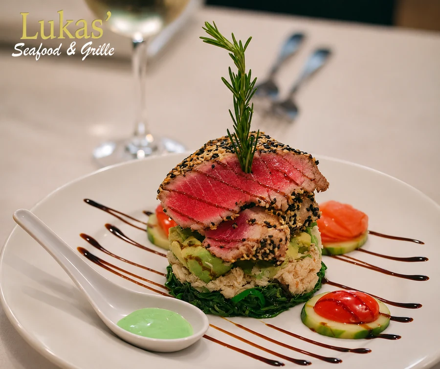
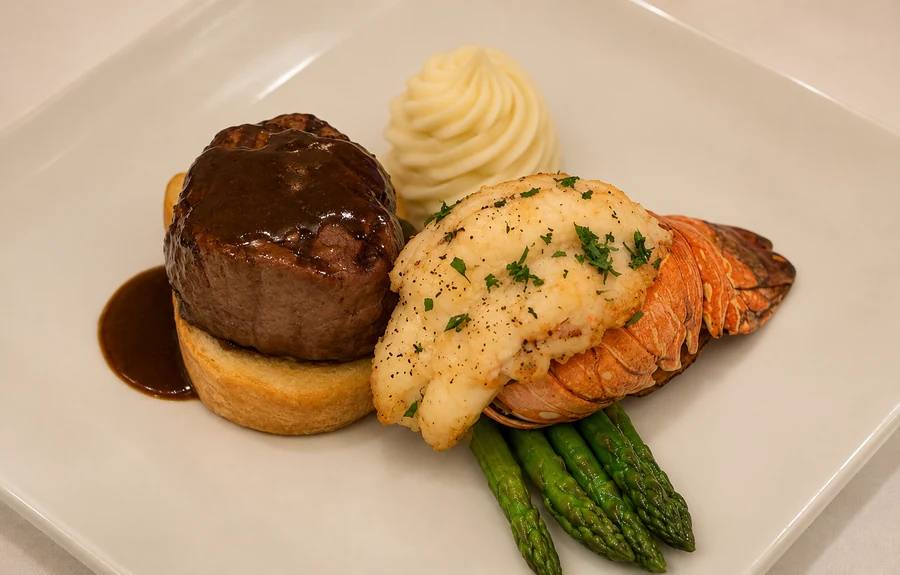

Seafood & raw bar
Blue Point oysters, garlic shrimp and New England clam chowder.
WARREN, NEW JERSEY
Seafood, steaks and cocktails in Warren, NJ.

Blue Point oysters, garlic shrimp and New England clam chowder.

Explore the steak and chop selections for dinner.

Lunch, cocktails and wine at the full bar.

PRIVATE DINING & CATERING
Planning a celebration or group dinner in Warren? Ask about the private dining room. For an event at your own venue, explore catering through ezCater.





